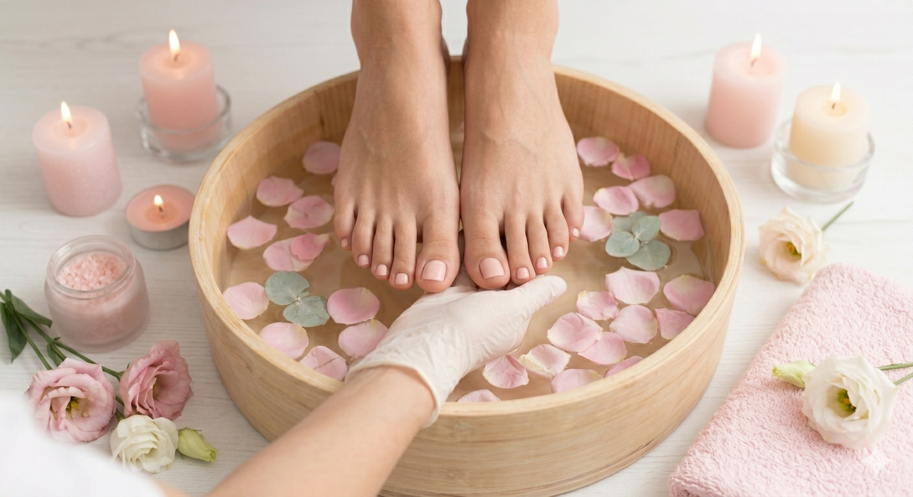
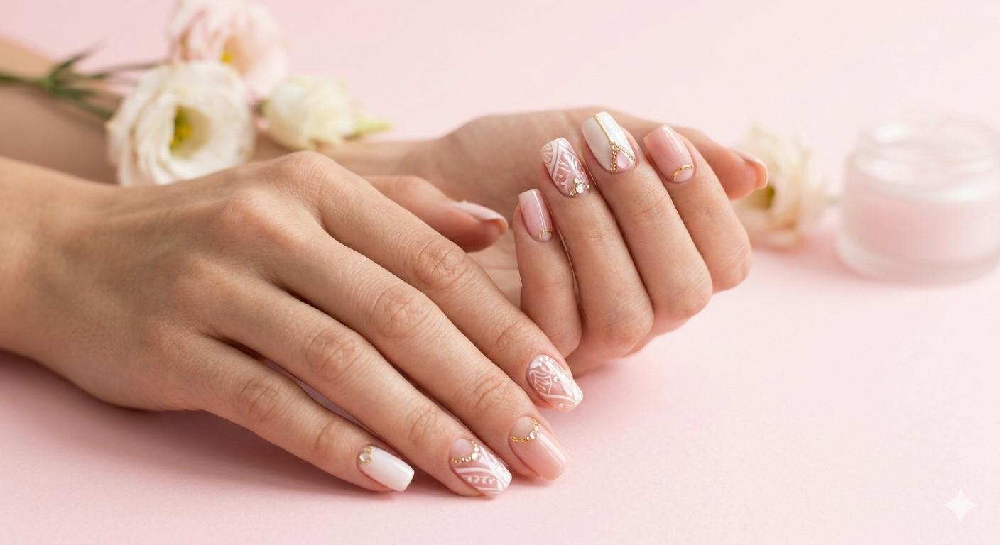
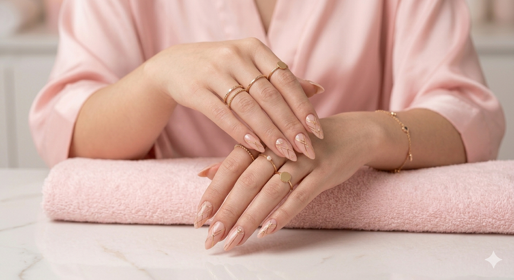

¡Regálate un momento de cuidado en la comodidad de tu hogar!
Agenda tu manicura y pedicura ideal en segundos.
Reserva tu cita
Servicios Destacados
Manicura Semipermanente
Disfruta de una manicura de larga duración con acabado brillante y resistente, de secado inmediato, que se mantiene impecable entre 3 y 4 semanas.
$55.000Pedispa Relajante

Sumérgete en una experiencia relajante que va más allá de lo convencional, combinando higiene, exfoliación, hidratación intensa, masajes y esmaltado tradicional.
$50.000Recubrimiento Polygel

Refuerza tus uñas naturales con esta técnica que combina la flexibilidad del gel con la resistencia del acrílico.
Ideal para uñas quebradizas. Duración:entre 3 y 4 semanas.
Press On

Luce uñas más largas y naturales con el sistema Soft Gel.Ideal para quienes buscan rapidez y comodidad, con una duración de 30 días aproximadamente y un resultado elegante y resistente.
$850